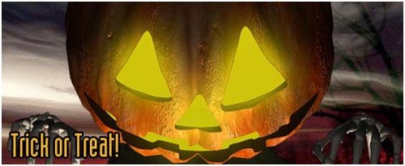

|
2002年10月30日
美國伺服器與韓國一樣舉行萬聖節南瓜活動
來源：美國天堂官方網站公告、Lineage Compendium

在上年萬聖節，在美國外的伺服器都有特別活動，但美國卻沒有舉行地度的萬聖節活動，結果受到眾玩家批評，因此在今年美國終於和韓國一樣舉行南瓜的活動。但今年台灣伺服器則較遜色，只是讓數隻怪物會掉空白卷軸。那麼香港的又會甚麼？會否只開放思巴克、牛人和死神等變身？開放幻想系列裝備？或是和上年一樣大派變杖？還是開放大家最期待的南瓜活動呢？一切有待香港天堂官方網站的公告。（NC Gamania，識做啦！^^）
NCsoft為了解除18禁將會大幅度修改天堂
原文：朝鮮日報
Nc Soft公司將大幅修改《天堂》
Nc Soft公司推出了大幅修改網路遊戲《天堂》的方案，這一遊戲已被影視品等級委員會（影等委）判定爲只限於18歲以上成年人使用。
28日，Nc Soft公司總經理金澤鎮稱：“爲解決《天堂》引發的青少年問題，我們推出限制玩遊戲的時間等多種修改程式。” Nc Soft公司決定，將引進以與父母的協商爲基礎規定玩遊戲時間的“定時制”，並通過發送電子郵件向父母通報其子女玩遊戲的時間。另外，在遊戲者長時間玩遊戲時，將發送警告資訊並運營預防網路中毒諮詢中心，著手籌備一系列對網路中毒的對策。
Nc Soft公司首先決定禁止影等委所指出的PK（Player Killing，亦即於遊戲中屠殺其他玩家的行爲）時搶得對方財産的行爲。Nc Soft公司表示：“爲了反映出家庭共同玩樂《天堂》的最初宗旨，決定修改遊戲內容，並決定接受影等委的再次評審。”
記者 朴乃善 nsun@chosun.com
重點如下：
- 限制未成年人仕玩天堂遊戲的時間，並以電郵方式將玩遊戲時間通知其家長。
- 長時間玩天堂會出現警告訊息，並將其資料傳送往預防網絡中毒（上癮）咨詢中心。
- 禁止在PK(Playing Killing)時玩家可以奪得對方的道具。
另外根據Lineage Playforum的報導，史萊姆及賽狗場已經關閉了，相信是官方為了減低遊戲中的賭博成份而做出的相應設定。
同時，在今天的更新檔中，我們發現玩家在長時間玩天堂後，系統會提醒（或警告）玩家。
美國正式伺服器10月29日更新內容
原文：美國天堂官方網站公告
1. 飛龍爪、水晶球及蜥蝪的角更改為不能轉移的道具。
2. 增強了思克巴的能力，她們的攻擊會造成較大傷害。
3. 修正了部分怪物的特殊攻擊，部分首領級怪物的強度將會增加。
4. 改善了龍的遠距離攻擊。
5. 舊的試鍊道具不會再掉下。
6. 部分怪物的屬性防禦有少許改變。 |